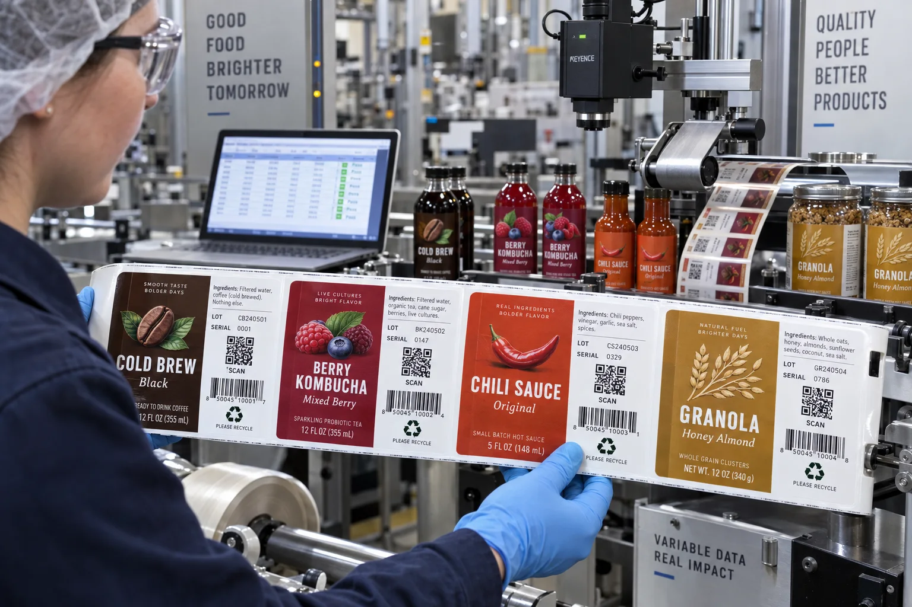

Short answer
Variable data label printing combines a fixed label design with changing fields such as QR codes, serial numbers, lots, dates or personalized graphics. The print technology matters, but the data file, validation rules and reconciliation process matter more.
Buyers sometimes send a spreadsheet and say, “put one code on every label.” That sounds complete until we ask which column is encoded, whether visible text must match it, what happens to duplicates and whether rejected labels may be reprinted. A variable-data brief needs to describe the system, not only the graphic.
Common variable-data jobs
| Use case | Variable element | Main control risk |
|---|---|---|
| Consumer campaign | Unique QR or alphanumeric code | Duplicates, dead links or early activation |
| Traceability | Lot, date, line or plant code | Mismatch with production records |
| Authentication | Unique serial and verification URL | Sequence leakage and database ownership |
| Regional content | Language, distributor or destination | Wrong version packed into a market |
| GS1 Digital Link | Standards-based web identifier | Incorrect syntax or unmanaged destination |
A composite example: 10,000 codes and one missing decision
This is a composite planning example. A beverage brand supplies a CSV with 10,000 URLs and asks for 10,000 labels. The file has 10,000 rows, so the team assumes it is ready. A quick check finds 9,997 unique URLs: two duplicates and one blank cell. The printed serial text also does not appear in the URL, so the brand cannot reconcile a damaged label by sight.
My first instinct used to be, “the customer owns the data.” Contractually that can be true. Operationally it is not enough. We still need a preflight that checks row count, blank fields, duplicates, URL format and the relationship between visible and encoded values. A printer should not silently rewrite business data, but it should expose obvious failures before ink turns them into inventory.
Build the data file before designing the code area
A clean variable-data file usually has one row per record and one purpose per column. Avoid merged cells, formulas that depend on another workbook and columns with mixed meanings. Freeze the final export and give it a version name that both buyer and printer can reference.
- record_id: a unique internal key for reconciliation.
- encoded_value: the exact text placed inside the QR or barcode.
- human_readable: the serial or lot printed for people.
- sku or artwork: the static design assigned to the record.
- status: optional control for active, void or replacement records.
For consumer-facing URLs, decide whether the printed code points directly to a page or to a controlled redirect. Direct links are simple but permanent. A managed redirect allows destination content to change, but it creates a service that must be maintained for the package's life.
QR code size is not the only scan variable
Quiet zone, contrast, module size, print gain, curve, glare and camera distance all affect scanning. A mathematically valid code can still fail on a glossy black bottle if the contrast and reflection are poor. Clear labels also need a controlled white area when the product or package cannot provide stable contrast.
| Check | Why it matters | How to test |
|---|---|---|
| Quiet zone | Separates the code from surrounding graphics | Measure against final printed modules |
| Contrast | Cameras need a stable light/dark difference | Test on the filled package, not white paper |
| Surface geometry | Tight curves distort the code | Scan from expected hand positions |
| Finish | Gloss and condensation create reflections | Test under retail and cold-storage conditions |
| Destination | A perfect scan can still reach a broken page | Validate redirects, HTTPS and mobile layout |
Sequence control after printing
Production can generate rejects during setup, inspection or finishing. Decide whether rejected numbers are permanently void, safely reprinted or simply absent from the shipped set. A sweepstakes code may tolerate a missing number but never a duplicate. A traceability program may require an exact connection between the applied label and the production lot.
For higher-risk programs, request a reconciliation report: source records received, labels produced, rejected records, replacements and final shipped range. The amount of control should match the consequence of an error. A seasonal recipe QR does not need the same chain of custody as a product-authentication code.
Factory-side view
A code is not content; it is a promise that content will still exist
The label factory can verify that a QR scans on shipment day. We cannot keep a buyer's domain renewed or campaign database online five years later.
Assign ownership for the link, redirect and privacy policy before the first code is printed. Otherwise the most durable label may outlive the digital system behind it.
Where static printing is the better answer
Variable data adds file handling, proof logic and inspection. If every bottle only needs the same product page, one static QR code is simpler and easier to control. If lots and dates are created on the filling line, preprinting them may create inventory conflicts. We sometimes recommend leaving a clear coding zone and using the co-packer's validated inkjet or thermal system instead.
Variable-data quote checklist
- State the number of unique records and quantity per artwork.
- Provide a final CSV sample with column definitions.
- Define uniqueness, sequence and duplicate rules.
- Specify visible text, code type, error correction and minimum scan size.
- Explain whether rejected records can be reprinted.
- Confirm the destination domain, redirect owner and activation date.
- Agree on scan sampling and any reconciliation report.
Read Barcode and QR Code Labels for static code placement and Date Code and Lot Number Labels for on-line coding zones. For standards-based web identifiers, review the official GS1 Digital Link standard.
Frequently asked questions
What is variable data label printing?
Variable data printing changes selected elements from label to label or batch to batch, such as a QR code, serial number, lot, date, name or campaign image, while the main design remains consistent.
How should unique QR codes be supplied to a label printer?
A clean CSV or database export is common. Each row should have a unique identifier and the exact encoded value or destination. Column names, expected row count and duplicate rules should be agreed before production.
Can one QR code open different content later?
A QR code can point to a managed redirect or GS1 Digital Link that changes destination content, but the printed encoded value itself remains fixed. The redirect service and domain must be maintained.
How do you prevent duplicate serial labels?
Validate uniqueness before ripping, count generated records against the approved dataset, inspect sequence exceptions and scan representative samples. High-risk programs may also require reconciliation of produced, rejected and shipped numbers.
Related label guides
- Digital vs Flexographic Label Printing: Buyer Guide
- Peel-and-Reseal Labels for Food Packaging
- Glass Bottle Labels That Survive Condensation
Review the complete label construction
Send the package photos, material, finished label size, quantity by artwork, storage conditions and application method. We can review fit, material and production details before preparing a quote and digital proof.